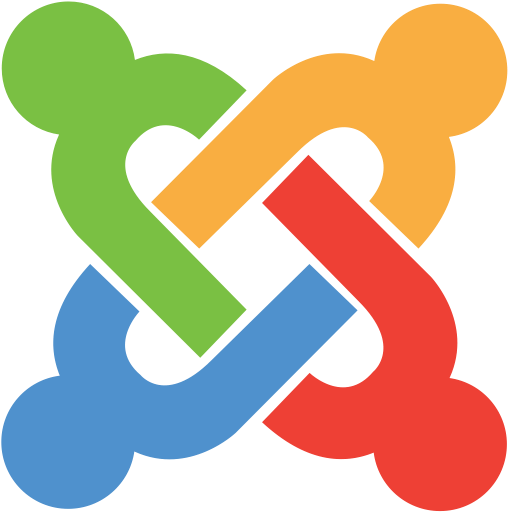
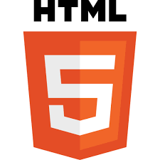
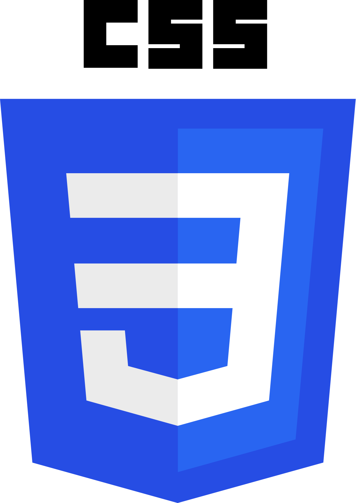
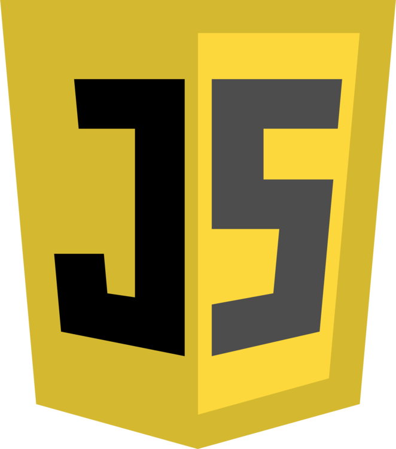

Cześć, Nazywam się Dawid Wcisło, mam 21 lat i Od początku 2020 roku systematycznie uczę się tworzenia
stron internetowych oraz rzeczy związanych z hostingiem. Każdego dnia uczę się czegoś nowego, lubię poznawać nowe technologie i sposoby, które pomagają w tworzeniu
stron. W wolnych chwilach lubię grać na gitarzę, gotować oraz grać w gry. Obecnie odbywam kurs na front-end developera, którego ukończę 5 marca.

Zangażowanie
Zawsze staram się wykonać jak najlepiej powierzone mi zadania. Nie interesują mnie półśrodki.
Odpowiedzialność
Jestem odpowiedzialny za swoje czyny. Jak każdy człowiek popełniam błędy ale potrafię z nich wyciągnąć wnioski.
Samodoskonalenie
Nie interesuje mnie kiedy ktoś za mnie naprawi problem. Muszę wiedzieć co poszło nie tak, dlaczego i jak to naprawić. Innymi słowy chcę się nauczyć łowić a nie rybe czy nawet 100 ryb.
Motywacja
Tak naprawdę to jej nie potrzebuję, ponieważ uwielbiam uczyć się o tworzeniu stron internetowych i na pewno tym chce się zajmować w przyszłości.
Punktualność
Zawsze byłem zdania, że jeżeli mam się spóźnić chociaż 5 minut to wolę być poł godziny wcześniej, nie inaczej jest z powierzonymi zadaniami, zawsze staram się je wykonać jak najlepiej i jak najszybciej.
I najważniejsze...
Kocham pizzę, więc znam dużo ofert pizzerii internetowych. :)
Wordpress był pierwszym cms'em, którego poznałem podczas swojej przygody tworzenia stron internetowych. Obecnie znam kody błędów i umiem sobie z nimi poradzić. Potrafię stworzyć multisite dla wordpressa, zmienić adres domeny za pomocą replace, Wiem gdzie w plikach znajdują się miejsca na wtyczki oraz motywy. A i oczywiście umiem dodawać, modyfikować strony wpisy i tym podobvne.
Drugim cms'em, którego poznałem podczas swojej wciąż trwającej przygody był Joomla, będę szczery nie polubiliśmy się ale mimo wszystko prześwietliłem go i dzięki temu znam podstawy obsługi tym cms'em

Linux towarzyszy mi prawie od początku mojej nauki, najpierw były to tylko zwykłe komendy w Putty, potem jednak zmieniłem swój system operacyjny na Linuxa Mint dzięki czemu poznaje go codziennie.
Mam również teoretyczne pojęcie z zakresu hostingu, wiem jak one działają oraz wiem co to są domeny, znam również typy certifikatów SSL i wiem jak zabezpieczają one stronę.
Znam protokoły HTTP, DNS, SMTP, POP3, IMAP, FTP, SSH i wiem do czego służą, korzystam codziennie z większości tych protokołów korzystając z internetu, tak samo jak większość użytkowników nawet o tym nie wiedząc. Ale dodatkowo jestem zaznajomiony z Filezillą oraz Putty.
HTML zacząłem poznawać kiedy zacząłem myśleć na poważnie o front-endzie. Obecnie znam najnowsze znaczniki semantyczne i żadny kod napisany w HTML nie jest mi straszny.


Równomiernie z nauką HTML uczyłem się również CSS'a, znam ich składnie umiem ustawiać witryny za pomocą flexa oraz grida oraz modyfikować kod, który napotkam
Po poznaniu języków opisowych to satysfakcjonującego mnie poziomu, zacząłem się uczyć Javascriptu, póki co znam jedynie podstawy jednak nie poddaję się i staram się codziennie pracować z tym językiem.


Podobnie jest również z php oraz mysql tych języków zacząłem uczyć się nie dawno i opanowałem dopiero podstawy jednak codzienie staram się uczyć o tym języku
Pracowałem w różnych miejscach z różnymi ludźmi, jednak zawsze pomagałem jak tylko mogłem, ponieważ byliśmy drużyną, nigdy nie tworzyłem toksycznej atmosfery bo sam jej nie lubię.
Podczas swojej kariery natrafiałem na przeróżnych klientów, od pijanych po roszczeniowych, którzy uważali, że należy im się wszystko, jednak zawsze podchodziłem do nich profesjonalnie nigdy nie dawałem się ponieść emocjom i starałem dojść do porozumienia.